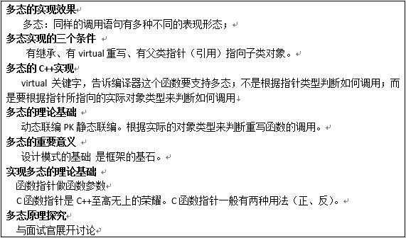

前言
C++继承（应该是多态）这个位置总有些遗忘，再次看看。（20190112）
抽象、封装、继承和多态性：
- 封装：突破了C语言函数的概念，当将一个类作函数参数时能将一个对象传递给函数并且在函数中能访问该对象的属性和方法；
- 继承：继承能够复用前人写的代码；
- 多态：不仅能复用前人写的代码而且能够复用后来人写的代码（能向后扩展）。例如：80年代写了一个框架···90人写的代码···。
继承
派生类继承了基类的全部成员变量和成员方法（除了构造和析构之外的成员方法），但是这些成员的访问属性，在派生过程中是可以调整的。
继承方式及子类对外访问属性
| Item | Value |
|---|---|
| public继承 | 父类成员在子类中保持原有访问级别 |
| private继承 | 父类成员在子类中变为private成员 |
| protected继承 | 父类中public成员会变成protected |
| 父类中protected成员仍然为protected | |
| 父类中private成员仍然为private |
private成员在子类中依然存在，但是却无法访问到。不论种方式继承基类，派生类都不能直接使用基类的私有成员。
继承中的访问控制
类的继承方式会影响父类的属性在子类及子类外部的访问
判断某一句话，能否被访问
1）看调用语句，这句话写在子类的内部、外部
2）看子类如何从父类继承（public、private、protected）
3）看父类中的访问级别（public、private、protected）
- 访问级别设置原则
1、需要被外界访问的成员直接设置为public
2、只能在当前类中访问的成员设置为private
3、只能在当前类和子类中访问的成员设置为protected，protected成员的访问权限介于public和private之间。
- 类型兼容性原则
类型兼容规则是指在需要基类对象的任何地方，都可以使用公有派生类的对象来替代。通过公有继承，派生类得到了基类中除构造函数、析构函数之外的所有成员。这样，公有派生类实际就具备了基类的所有功能，凡是基类能解决的问题，公有派生类都可以解决。类型兼容规则中所指的替代包括以下情况：
子类对象可以当作父类对象使用
子类对象可以直接赋值给父类对象
子类对象可以直接初始化父类对象
父类指针可以直接指向子类对象
父类引用可以直接引用子类对象
在替代之后，派生类对象就可以作为基类的对象使用，但是只能使用从基类继承的成员。
类型兼容规则是多态性的重要基础之一。
子类就是特殊的父类 (base *p = &child;)
- 继承中的对象模型
类在C++编译器的内部可以理解为结构体
子类是由父类成员叠加子类新成员得到的
在子类对象构造时，需要调用父类构造函数对其继承得来的成员进行初始化
在子类对象析构时，需要调用父类析构函数对其继承得来的成员进行清理
子类对象在创建时会首先调用父类的构造函数
父类构造函数执行结束后，执行子类的构造函数
当父类的构造函数有参数时，需要在子类的初始化列表中显示调用
析构函数调用的先后顺序与构造函数相反
- 继承与组合混搭情况下，构造和析构调用原则
原则：
先构造父类，再构造成员变量、最后构造自己
先析构自己，在析构成员变量、最后析构父类
- 继承中同名成员变量处理方法
当子类成员变量与父类成员变量同名时：
子类依然从父类继承同名成员
在子类中通过作用域分辨符::进行同名成员区分（在派生类中使用基类的同名成员，显式地使用类名限定符）
同名成员存储在内存中的不同位置
基类的成员变量的作用域延伸到所有派生类
派生类的重名成员屏蔽基类的同名成员
派生类屏蔽基类同名成员函数，派生类对象调用自身的成员函数
同名成员变量和成员函数通过作用域分辨符进行区分
- 派生类中的static关键字
基类定义的静态成员，将被所有派生类共享
根据静态成员自身的访问特性和派生类的继承方式，在类层次体系中具有不同的访问性质 （遵守派生类的访问控制）
派生类中访问静态成员，要显式说明：类名::成员如B::i++或通过对象访问对象名.成员
static函数同样也遵守3个访问原则
static易犯错误（不但要初始化，更重要的显示的告诉编译器分配内存）
构造函数默认为private型
- 多继承
多继承语法class 派生类名 : 访问控制 基类名1 , 访问控制 基类名2 , … , 访问控制 基类名n
多个基类的派生类构造函数可以用初始式调用基类构造函数初始化数据成员。
执行顺序与单继承构造函数情况类似。多个直接基类构造函数执行顺序取决于定义派生类时指定的各个继承基类的顺序。
一个派生类对象拥有多个直接或间接基类的成员。不同名成员访问不会出现二义性。如果不同的基类有同名成员，派生类对象访问时应该加以识别。
- 虚继承
如果一个派生类从多个基类派生，而这些基类又有一个共同的基类，则在对该基类中声明的名字进行访问时，可能产生二义性。
如果在多条继承路径上有一个公共的基类，那么在继承路径的某处汇合点，这个公共基类就会在派生类的对象中产生多个基类子对象。
产生二义性的派生类，若要访问从不同基类中继承的共同祖宗类的成员，则必须要用域作用符指明从何处继承而来。如c.B1::a; c.B2::a;
要使这个公共基类在派生类中只产生一个子对象，必须对这个基类声明为虚继承，使这个基类成为虚基类。
虚继承声明使用关键字virtual。 (可实验验证增加virtual关键字后，构造函数调用的次数。)
多态
赋值兼容性原则遇上函数重写
函数重写：
在子类中定义与父类中原型相同的函数
函数重写只发生在父类与子类之间
如果子类定义了与父类中原型相同的函数会发生什么？
父类中被重写的函数依然会继承给子类
默认情况下子类中重写的函数将隐藏父类中的函数
通过作用域分辨符::可以访问到父类中被隐藏的函数
C/C++是静态编译型语言
在编译时，编译器自动根据指针的类型判断指向的是一个什么样的对象
1）在编译此函数的时，编译器不可能知道指针p究竟指向了什么。
2）编译器没有理由报错。
3）于是，编译器认为最安全的做法是编译到父类的print函数，因为父类和子类肯定都有相同的print函数。
在同一个类里面能实现函数重载
继承的情况下，发生重写, 重载不一定;
重写的定义 静态联编
重载是 动态联编
面向对象新需求：
如果我传一个父类对象，执行父类的print函数
如果我传一个子类对象，执行子类的printf函数
根据实际的对象类型来判断重写函数的调用:
如果父类指针指向的是父类对象则调用父类中定义的函数
如果父类指针指向的是子类对象则调用子类中定义的重写函数
多态:同样的调用语句有多种不同的表现形态
C++中通过virtual关键字对多态进行支持
使用virtual声明的函数被重写后即可展现多态特性
在父类中写了virttual关键字后，在子类中的重写函数写不写virtual均可，但为了提示使用了多态一般建议写上virtal关键字。
间接赋值成立的3个条件：
- 定义两个变量···
- 建立关联···
- *p···
多态成立的三个条件：
- 要有继承
- 要有函数重写和虚函数
- 要有父类指针（父类引用）指向子类对象
多态是设计模式的基础，多态是框架的基础。
多态的理论基础
静态联编和动态联编：
1、联编是指一个程序模块、代码之间互相关联的过程。
2、静态联编（static binding），是程序的匹配、连接在编译阶段实现，也称为早期匹配。
3、重载函数使用静态联编。
4、动态联编是指程序联编推迟到运行时进行，所以又称为晚期联编（迟绑定）。
5、switch 语句和 if 语句是动态联编的例子。
6、C++与C相同，是静态编译型语言
7、在编译时，编译器自动根据指针的类型判断指向的是一个什么样的对象；所以编译器认为父类指针指向的是父类对象。
8、由于程序没有运行，所以不可能知道父类指针指向的具体是父类对象还是子类对象
从程序安全的角度，编译器假设父类指针只指向父类对象，因此编译的结果为调用父类的成员函数。这种特性就是静态联编。

函数重载：
必须在同一个类中进行
子类无法重载父类的函数，父类同名函数将被名称覆盖
重载是在编译期间根据参数类型和个数决定函数调用
函数重写：
必须发生于父类与子类之间
并且父类与子类中的函数必须有完全相同的原型
使用virtual声明之后能够产生多态(如果不使用virtual，那叫重定义)
多态是在运行期间根据具体对象的类型决定函数调用
在什么情况下应当声明虚函数
构造函数不能是虚函数。建立一个派生类对象时，必须从类层次的根开始，沿着继承路径逐个调用基类的构造函数
析构函数可以是虚的。虚析构函数用于指引 delete 运算符正确析构动态对象
父类指针和子类指针的步长：
1） 铁律1：指针也只一种数据类型，C++类对象的指针p++/–，仍然可用。
2） 指针运算是按照指针所指的类型进行的。
p++《=》p=p+1 //p = (unsigned int)basep + sizeof(*p) 步长。
3） 结论：父类p++与子类p++步长不同；不要混搭，不要用父类指针++方式操作数组。
多态原理：
- 当类中声明虚函数时，编译器会在类中生成一个虚函数表
- 虚函数表是一个存储类成员函数指针的数据结构
- 虚函数表是由编译器自动生成与维护的
- virtual成员函数会被编译器放入虚函数表中
- 当存在虚函数时，每个对象中都有一个指向虚函数表的指针（C++编译器给父类对象、子类对象提前布局vptr指针；当进行howToPrint(Parent *base)函数是，C++编译器不需要区分子类对象或者父类对象，只需要再base指针中，找vptr指针即可。）
- VPTR一般作为类对象的第一个成员
C++中多态的实现原理：
当类中声明虚函数时，编译器会在类中生成一个虚函数表
虚函数表是一个存储类成员函数指针的数据结构
虚函数表是由编译器自动生成与维护的
virtual成员函数会被编译器放入虚函数表中
存在虚函数时，每个对象中都有一个指向虚函数表的指针(vptr指针)